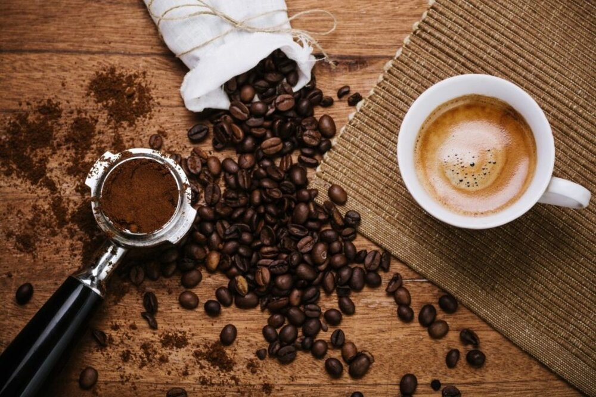

KAF'S CAFE

KAF'S CAFE
KAF'S CAFE là sản phẩm kết tinh từ kinh nghiệm hai thập niên vượt qua bao khó khăn và thử thách đồng thời tiếp tục khẳng định khát vọng: nâng tầm cà phê Việt Nam trên bản đồ cà phê thế giới. Sản phẩm King Coffee đảm bảo 4 yếu tố: chất lượng cao, tôn trọng phẩm chất riêng của cà phê bản địa, phù hợp nhiều hình thức pha chế và được thu mua minh bạch tại các vùng cà phê nguyên liệu nổi tiếng. Với hệ thống phân phối mạnh mẽ khắp thế giới, hiện nay King Coffee đã có mặt trên 60 quốc gia và vùng lãnh thổ toàn cầu, nhận được được sự khen ngợi của giới chuyên môn và sự tin yêu của người tiêu dùng.
KAF'S CAFE được làm từ những hạt cà phê tốt nhất trên thế giới, tuyển chọn từ những vùng nguyên liệu cà phê nổi tiếng như Ethiopia, Brazil, Kenya, Indonesia..., và đặc biệt là Robusta từ thủ phủ cà phê của Việt Nam – Buôn Ma Thuột, Arabica của vùng Cầu Đất (Lâm Đồng). Các sản phẩm King Coffee trải rộng từ hòa tan (King Coffee 3in1, Pure Black, Coffee & Creamer, Espresso), rang xay (Gourmet Blend, Inspire Blend, Premium Blend), Whole Bean cho đến các dòng cà phê Luxury như Weasel, Legacy, Golden và dòng Capsules mới đẳng cấp...

Special Items
 |
 |
 |
| Soft Deli Cup 10$ |
Coffee Art 12,5$ |
Speciality Tea 13$ |
Liên hệ
Công Ty cổ Phần Kaf's cafe
Địa chỉ: Tầng 3-4, Tòa nhà Việt Tower, số 01 Phố Thái Hà, Phường Trung Liệt, Quận Đống Đa, Thành phố Hà Nội
Điện thoại: O369142342 - Mã số thuế: 01087874679
Giấy phép mạng xã hội số 370/GP-BTTTT do Bộ Thông tin Truyền thông cấp ngày 09/09/2007